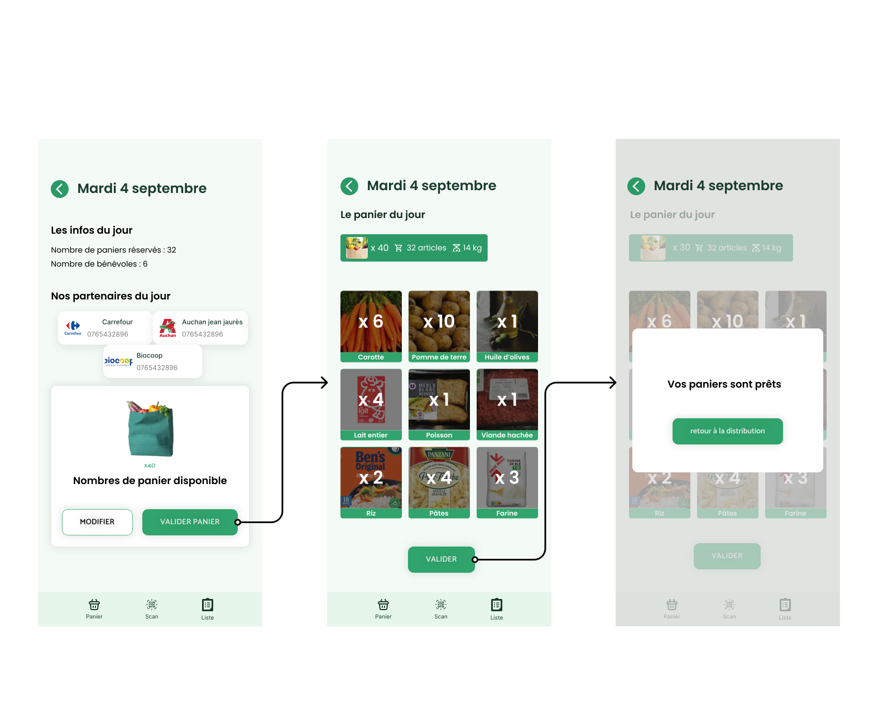

Au Bon Panier est une application mobile conçue pour simplifier et accélérer la redistribution alimentaire. Face au gaspillage alimentaire massif, les associations manquent souvent d’outils adaptés à leur réalité de terrain. Au Bon Panier comble ce vide en proposant une solution intuitive, rapide et accessible à toutes les associations, de la facilitation de l’inventaire jusqu’à la génération de paniers.
L’application s’adresse principalement aux d’associations, bénévoles et aux bénéficiaires d’aide alimentaire. Elle est pensée pour des personnes souvent peu à l’aise avec la technologie, pressées sur le terrain, et qui ont besoin d’un outil qui va droit au but


En France, plus de 10 millions de tonnes de nourriture sont gaspillées chaque année. Pourtant, des millions de personnes ont besoin de l’aide alimentaire. Le problème n’est pas toujours la quantité de nourriture disponible, mais la difficulté à la redistribuer efficacement. Il existe déjà des acteurs qui agissent pour la redistribution alimentaire en essayant de réduire le gaspillage.
Au Bon Panier est né d’un constat simple : les outils existants sont souvent trop complexes ou mal adaptés aux réalités des associations. Pour répondre à ces besoins, nous avons développé une solution pensée pour le terrain et centrée sur l’efficacité.
Nous proposons une interface intuitive, conçue pour être utilisée facilement par tous, même sans compétences techniques. Chaque fonctionnalité répond à un besoin concret du quotidien associatif.
Notre solution optimise chaque étape, du don à la distribution. Les stocks sont mieux suivis, les paniers mieux organisés et les pertes réduites au minimum.
En automatisant les tâches répétitives (inventaires, suivi des paniers, traçabilité), Au Bon Panier libère du temps pour l’essentiel : accompagner les bénéficiaires. Les équipes gagnent en efficacité et la coordination devient plus simple et plus rapide.
L’utilisateur ouvre l’application et dicte oralement la liste des produits disponibles. L’application transcrit et structure automatiquement l’inventaire. Ensuite, un algorithme génère des paniers équilibrés à partir de cet inventaire, prêts à être distribués.



Génération de l’inventaire par commande vocale, avec transcription en temps réel. Cette technologie permet aux bénévoles de créer un inventaire sans saisie manuelle, directement depuis le terrain.
Logique de répartition basée sur les quantités disponibles et les profils des bénéficiaires. L’algorithme optimise la composition des paniers pour garantir une distribution équitable et adaptée aux besoins.
HTML, CSS, JavaScript / React Native, React‑native‑qr‑code‑svg, React‑native‑camera. Ces technologies permettent une application mobile performante, légère et adaptée.
Le prototype haute fidélité a été conçu sur Figma, permettant une visualisation précise de l’interface et une expérience utilisateur optimisée avant le développement.
ygiuj
ygiuj
ygiuj
ygetrfbuji;okp
ygetrfbuji;okp
ygetrfbuji;okp